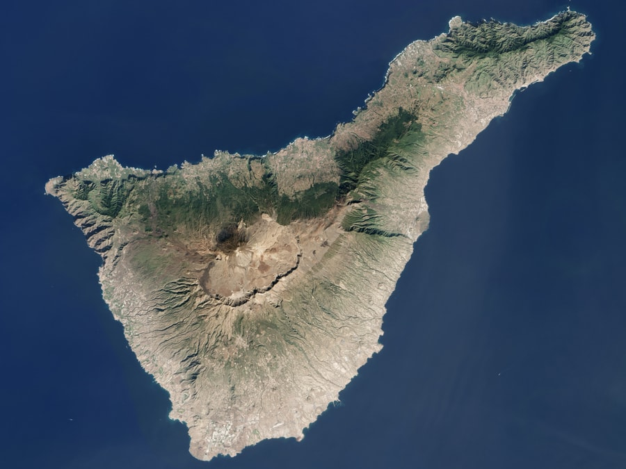

Contenido Principal
Este es el contenido principal de la página. Aquí puedes incluir artículos, textos, imágenes, etc.

Bienvenidos a Descubriendo Tenerife. Aqui podrás aprender sobre de la isla de Tenereife. Podras aprender sus historia, datos interesante sobre su geografia y clima, además de descubrir como es su patrimonio cultutal.
Tenerife es una isla del océano Atlántico perteneciente a la comunidad autónoma de Canarias, en España. Junto con La Palma, La Gomera y El Hierro forma la provincia de Santa Cruz de Tenerife. Con una superficie de 2034,38 km² y una población de 967 575 habitantes (2025), es la isla más extensa y poblada del archipiélago canario, así como de toda la región de la Macaronesia.
La ciudad de Santa Cruz de Tenerife es la capital de la isla y de la provincia homónima, así como su municipio más poblado, con 211 436 habitantes (INE 2024). Además la ciudad es, capital de la comunidad autónoma de Canarias, compartiendo ese estatus con Las Palmas de Gran Canaria. A pesar de esto, entre 1833 y 1927 Santa Cruz de Tenerife fue oficialmente la única capital del archipiélago canario, hasta que en 1927 un decreto ordenó que la capitalidad de Canarias fuera compartida, que es como permanece actualmente. El segundo municipio por número de habitantes de la isla, y tercero de Canarias, con 160 258 habitantes (INE 2024), es San Cristóbal de La Laguna, cuyo casco histórico es Patrimonio de la Humanidad. El área metropolitana de Santa Cruz de Tenerife tiene una población de más de 400 000 habitantes.
La isla posee otro lugar catalogado por la Unesco como Patrimonio de la Humanidad, el parque nacional del Teide, el cual es el más visitado de España y uno de los más visitados del mundo. En él se encuentra la máxima elevación de España y tercer volcán más grande del mundo desde su base en el lecho oceánico, el Teide.Por su parte, el macizo de Anaga, por su riqueza natural y etnográfica, fue catalogado como reserva de la biosfera, también por la Unesco, el 9 de junio de 2015.Se trata del paraje natural que mayor cantidad de endemismos tiene de Europa
De gran importancia es el carnaval de Santa Cruz de Tenerife, declarado Fiesta de Interés Turístico Internacional y considerado como uno de los de mayor relevancia a nivel mundial. Además, la isla posee una variada arquitectura, destacando entre ella la colonial y la contemporánea, cuyo máximo exponente es el moderno edificio del auditorio de Tenerife, situado en Santa Cruz de Tenerife. La isla también es conocida por ser un gran destino turístico, ya que recibe a más de seis millones de turistas cada año, siendo, por lo tanto, el principal destino turístico del archipiélago canario, así como uno de los más importantes de España y del mundo
Este es el contenido principal de la página. Aquí puedes incluir artículos, textos, imágenes, etc.